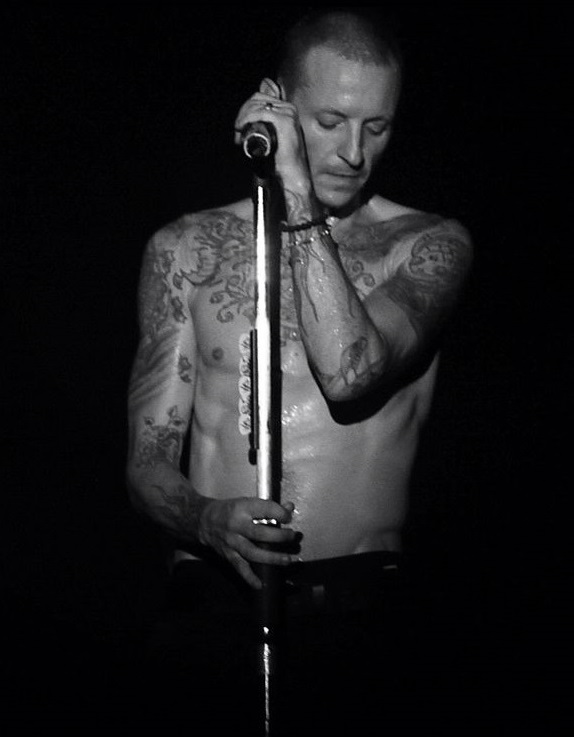

_____________Chester Bennington_______________
Chester Charles Bennington was an American singer, songwriter, and
occasional actor. He was best known as the lead vocalist for Linkin
Park and was also lead vocalist for the bands Grey Daze, Dead by
Sunrise and, between 2013 and 2015, Stone Temple Pilots. Bennington
has been credited by several publications as one of the greatest
rock vocalists of his generation. Bennington first gained prominence
as a vocalist following the release of Linkin Park's debut album
Hybrid Theory (2000), which was a worldwide commercial success. The
album was certified Diamond by the Recording Industry Association of
America in 2005, making it the best-selling debut album of the
decade, as well as one of the few albums ever to achieve that many
sales. Linkin Park's following studio albums, from Meteora (2003) to
One More Light (2017), continued the band's success. Bennington
formed his own band, Dead by Sunrise, as a side project in 2005. The
band's debut album, Out of Ashes, was released on October 13, 2009.
He became the lead singer of Stone Temple Pilots in 2013 to release
the extended play record High Rise on October 8, 2013, via their own
record label, Play Pen, but left in 2015 to focus solely on Linkin
Park.

________________________Mike Shinoda_________________
Michael Kenji Shinoda (篠田 賢治, Shinoda Kenji, born February 11,
1977) is an American musician, singer, songwriter, rapper, record
producer, and graphic designer. He co-founded Linkin Park in 1996
and is one of the band's vocalists, as well as rhythm guitarist,
keyboardist, primary songwriter and producer. Shinoda later created
a hip-hop-driven side project, Fort Minor, in 2004. He has also
served as a producer for tracks and albums by Lupe Fiasco, Styles of
Beyond and the X-Ecutioners. Born in Panorama City, California and
raised in Agoura Hills, Shinoda formed Xero, which later became
Linkin Park, with two of his high school friends: Brad Delson and
Rob Bourdon in 1996, later joined by Joe Hahn, Dave Farrell and Mark
Wakefield. Chester Bennington replaced Wakefield as the lead
vocalist in 1999. The band later signed a record deal with Warner
Bros Records. Shinoda is also the co-founder of Machine Shop
Records, a California-based record label. Outside of music, Shinoda
is an artist and graphic designer. He has painted several pieces of
artwork, some of which have been featured in the Japanese American
National Museum.
__________Phoenix________________________________
David Michael Farrell, better known by his stage name Phoenix (born
February 8, 1977) is an American musician, best known as the bassist
and backing vocalist of the rock band Linkin Park. He was also a
member of Snax, a pop punk band. Farrell was taught how to play
guitar by his mother when he was in high school. He grew up in
Plymouth but later moved to Mission Viejo, California at the age of
5.Tasty Snax While attending high school, Farrell joined a Christian
Ska-Punk rock band named 'Tasty Snax', who would later rename
themselves to 'The Snax'. Phoenix transitioned from the electric
guitar to bass to accommodate The Snax. The band included Farrell's
longtime college friend Mark Fiore, who was also associated in
making of various video albums for Linkin Park. The band recorded
two studio albums and one compilation album, signed to Screaming
Giant Records. Farrell left the band in 2000. Linkin Park Dave
Farrell playing with Linkin Park at The Globe Arena in Stockholm.
Farrell joined Xero, the earliest incarnation of Linkin Park, after
meeting Brad Delson at UCLA.
__________________________Rob Bourdon______
Robert Gregory Bourdon (born January 20, 1979) is an American
musician, best known as the drummer and co-founding member of the
American rock band Linkin Park. The youngest member of the band,
Bourdon met Aerosmith drummer Joey Kramer, and was inspired to learn
how to play the drums. After joining his high school's jazz band in
his sophomore year, he met Brad Delson and Mike Shinoda, who both
lived nearby in the San Fernando Valley. Bourdon and Delson would
form their own band, Relative Degree.Bourdon grew up in the town of
Calabasas, California, he attended Agoura High School in Agoura
Hills where he met future bandmates Mike Shinoda and Brad Delson. He
currently resides in Los Angeles.
________________Brad Delson________________
Bradford Phillip Delson (born December 1, 1977) is an American
musician and record producer, best known as the lead guitarist and
one of the founding members of the American rock band Linkin Park.
Brad Delson attended Agoura High School in Agoura Hills, an affluent
suburb of Los Angeles, with childhood friend and Linkin Park
bandmate Mike Shinoda. He played in various bands throughout his
high school career, the most notable being Relative Degree, in which
he met and teamed up with drummer Rob Bourdon. Relative Degree's
goal was simply to play a show and after achieving that goal, they
disbanded. After graduating in 1995, Delson, Shinoda and Bourdon
formed Xero, which would eventually become the starting point for
Linkin Park. Delson entered UCLA in 1995 as a Regents' Scholar
working toward a Bachelor of Arts degree in Communication Studies
with a specialization in Business and Administration. He shared a
dorm room with future Linkin Park bandmate Dave Farrell for three
out of his four years at school.[3] Delson also had the opportunity
to intern with a member of the music industry as part of his studies
and ended up working for Jeff Blue, an A&R representative at Warner
Bros. Records, who offered constructive criticism on Xero's demos,
which were from the 4-track sampler tape Xero, which was released in
1996. Blue later introduced Chester Bennington, who would become the
lead vocalist of Linkin Park, to the rest of the band. After
graduating summa cum laude and Phi Beta Kappa from UCLA in 1999,
Delson decided to forgo law school in order to pursue a musical
career with Linkin Park.
________________________________Joe Hahn______
Joseph Hahn (born March 15, 1977) is an American musician, DJ,
director and visual artist best known as the DJ and backing vocalist
of the American rock band Linkin Park, doing the scratching,
turntables, sampling, and programming for all seven of Linkin Park's
albums. Hahn, along with bandmate Mike Shinoda, are responsible for
most of Linkin Park's album artwork. Joseph "Joe" Hahn was born the
youngest of three children on March 15, 1977, in Dallas; Hahn has
two older sisters. Hahn grew up in Glendale, California and is a
second-generation Korean American. Hahn graduated from Herbert
Hoover High School in Glendale in 1995. He then studied at the Art
Center College of Design in Pasadena but did not graduate.